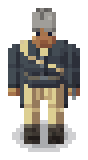
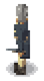
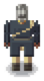

Odda Brine Tollivere
Patron of the line The Free Port's Debt.
Arrival. The player's first guide is still Lark, the Half-Blood girl from the quays, who meets every marked one on the square and takes them to Odda Brine Tollivere.
Quests
| Steps | Levels | Zone | What happens |
|---|---|---|---|
| 1–4 | 1–6 | Verge | Odda takes you in at the harbour and gives you small jobs: cargo, packet boats, a debt to collect. The harbour has lost money since the lights went out. |
| 5–8 | 7–12 | Verge, Kindling Hills | One of Odda's lighters has vanished with a cargo that was in no ledger. You follow it to the mainland. |
| 9–14 | 15–26 | Wreckwater Sound | Odda gets a letter of marque against imperial freight, but the cargo turns out to be ashblood on its way to the Black Synod. Trust 3: the sloop's hull. |
| 15–20 | 28–38 | Whalebone Isles, Marrowfield | The trail leads to a buyer who pays in coin from a kingdom that no longer exists. |
| 21–24 | 40–45 | Deepway | Odda wants to know who ruined her harbour. The answer is the Synod, and one of her own. Final reward: the sloop is launched. |
- First quest: Cargo Without a Ledger (level 2).
Description
Loud, generous, with a smile that costs more than it gives. Wants to be head herself.
The Free Port's Debt. Kaelmor's harbour master, losing money since the fires went out.
Gallery





